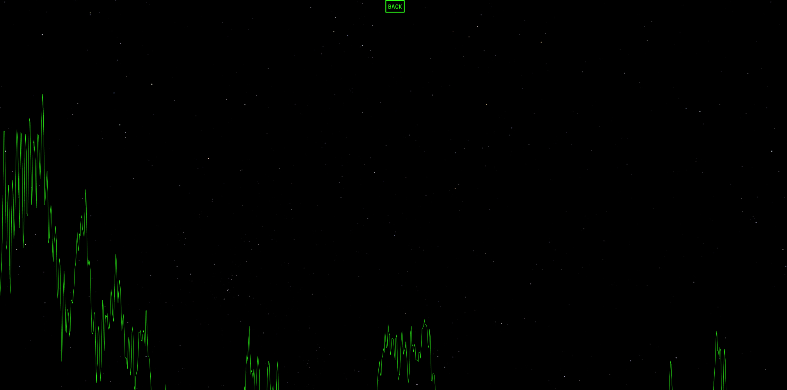

image and sound
image effects with p5.js
I wanted to go beyond the basic image and webcam recording demonstrated in this week's workshop, and found the p5.glitch library online. The library allows for glitch effects to be added to images and video, and I wanted to explore its functionality.
I started off with an image, taken from stickyfrogs.tumblr.com.

The glitch effect below was created by replacing and randomising byte values in the image. While it makes for a more interesting page, I would not use this effect further in my workbook without having a way to disable the glitch effects, as looking at them for an extended period of time can cause discomfort.
p5.sound
Another functionality I was interested in is the ability to visualise sound using p5.sound. I used the fast Fourier transform (FTT) functionality, which returns the frequencies and amplitudes of an audio input. By drawing a shape based on the output, we can visualise the frequency and amplitude of audio inputed through the user's microphone.
A link to the sketch.Below is a demonstration of the audio visualisation functionality. I may incorporate this into my workbook, since the results have a futuristic feel.
PREV HOME NEXT